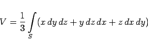

Inhalt Index DeskTop Bronstein

 Integralrechnung Oberflächenintegrale Oberflächenintegral allgemeiner Art
Integralrechnung Oberflächenintegrale Oberflächenintegral allgemeiner Art


Das Volumen V eines Körpers, der von einer geschlossenen Fläche S begrenzt ist, kann als Oberflächenintegral
|  | (8.167) |
berechnet werden, wobei S so orientiert ist, daß die äußere Seite der Fläche positiv genommen wird.